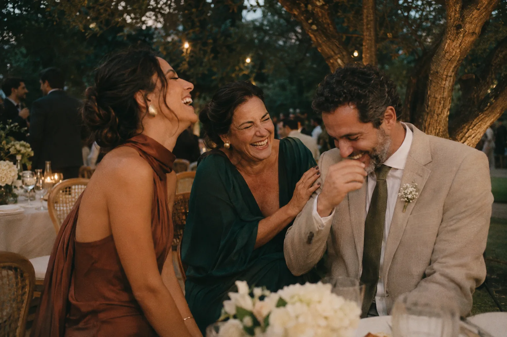

Casamentos intimistas
Cerimônia, bastidores e celebração, com cobertura combinada para o seu dia.

Fotografia documental para celebrações e famílias. A gente acompanha o dia e deixa espaço para as coisas acontecerem naturalmente.
Consultar uma dataCerimônia, bastidores e celebração, com cobertura combinada para o seu dia.
Ensaios em casa ou ao ar livre, respeitando o ritmo de quem está na foto.
Fotografias para apresentar a pessoa, o trabalho e o espaço em que ele acontece.
Escolha o tipo de sessão, a data prevista e a região para consultar a disponibilidade.
Simulação concluída. Nenhum pedido foi enviado.